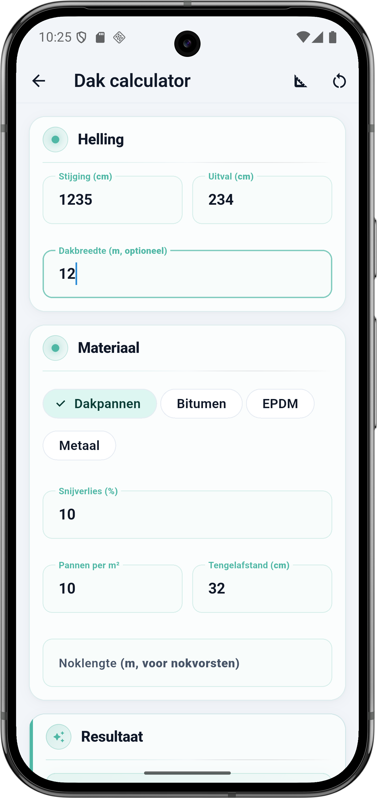
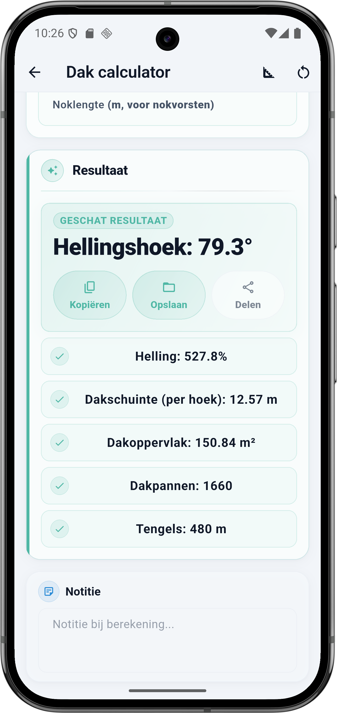

Wat vraagt de calculator
De Dak calculator heeft twee hoofdblokken: Helling en Materiaal. Bij Materiaal verschijnen velden afhankelijk van je keuze (Dakpannen, Bitumen, EPDM of Metaal). Elk veld hieronder komt één-op-één overeen met de app.
Helling
- Stijging (cm) — de verticale hoogte van je dakvlak, van de dakvoet tot de nok. Meet aan één dakhelft.
- Uitval (cm) — de horizontale projectie van de dakhelft, van de buitenkant van de muur tot recht onder de nok. Niet de hellingslijn, maar de platte afstand.
- Dakbreedte (m, optioneel) — de breedte van het hele dak (gevel-tot-gevel). Nodig als je het dakoppervlak in m² en de totale meters tengels wil zien.
Materiaal
- Dakpannen — klassieke keramische of beton pannen. Vraagt pannen per m², tengelafstand en optioneel noklengte.
- Bitumen — rollen bitumen voor plat of licht hellend dak. Vraagt dekking per rol en overlap.
- EPDM — rubber dakbedekking in grote banen. Vraagt banen breedte en overlap.
- Metaal — zink, aluminium of staal in platen of banen. Vraagt plaatformaat en overlap.
- Snijverlies (%) — standaard 10%. Verhogen bij een dak met veel dakramen, dakkapellen of noordhoeken.
Dakpannen-details
- Pannen per m² — staat op de pan. Vuistregel: klassieke oud-Hollandse pan 10 tot 12/m², grote keramische pannen 8 tot 10/m², leien ongeveer 22/m².
- Tengelafstand (cm) — hart-op-hart afstand tussen de latten waarop de pannen hangen. Hangt af van de pandekking (zichtbare deel). Standaard 32 cm.
- Noklengte (m, voor nokvorsten) — de lengte van de nok (bovenste horizontale rib). Vul in voor automatische berekening van nokvorsten (ongeveer 3 per m).
💡 Hoe meet je stijging en uitval
Stijging: de verticale hoogte van dakvoet tot nok, aan één dakhelft gemeten. Uitval: de horizontale afstand van muurdagkant tot recht onder de nok (dus niet schuin over het dak). Beide waarden samen vormen een rechthoekige driehoek — de schuine zijde is je dakschuinte.
De formule onder de motorkap
Stelling van Pythagoras doet het meeste werk. Dakschuinte is de hypotenusa, hellingshoek rolt uit de arctangens van stijging gedeeld door uitval.
Rekenvoorbeeld — dakvlak 12 m breed
Dit is de situatie uit de screenshot: één dakvlak met stijging 1235 cm en uitval 234 cm, dakbreedte 12 m, materiaal dakpannen met 10 per m², tengelafstand 32 cm, 10 procent snijverlies.
Invoer
| Veld | Waarde |
|---|---|
| Stijging | 1235 cm |
| Uitval | 234 cm |
| Dakbreedte | 12 m |
| Materiaal | Dakpannen |
| Snijverlies | 10 % |
| Pannen per m² | 10 |
| Tengelafstand | 32 cm |
Berekening stap voor stap
- Hellingshoek: arctan(1235 ÷ 234) = arctan(5,278) ≈ 79,3°
- Dakschuinte: √(1235² + 234²) = √1 579 981 ≈ 1257 cm = 12,57 m
- Dakoppervlak: 12,57 m × 12 m breed = 150,84 m²
- Dakpannen: 150,84 × 1,10 (10% snijverlies) × 10 pannen/m² ≈ 1660 stuks
- Tengellijnen op schuinte: ceil(12,57 ÷ 0,32) = 40 lijnen; × 12 m breed = 480 m tengels
Resultaat
| Onderdeel | Waarde |
|---|---|
| Hellingshoek | 79,3° |
| Helling | 527,8 % |
| Dakschuinte (per hoek) | 12,57 m |
| Dakoppervlak (per hoek) | 150,84 m² |
| Dakpannen | 1660 |
| Tengels | 480 m |
⚠️ Resultaat is per dakhelft
De 150,84 m² en 1660 pannen zijn voor één dakhelft. Een normaal zadeldak heeft twee hellingen — reken dus of maak twee berekeningen (één voor voorzijde, één voor achterzijde) en tel ze op. BuildExact laat beide dakhelften los zodat je verschillende hellingen aan voor- en achterzijde kunt rekenen.
Vuistregels hellingshoeken
Weten in welke range je zit helpt bij materiaalkeuze. Niet elk materiaal is geschikt voor elke helling:
| Hellingshoek | Type dak | Geschikt materiaal |
|---|---|---|
| 0 – 5° | Plat dak | Bitumen, EPDM, kunststof folie |
| 5 – 15° | Licht hellend | Bitumen, EPDM, metaal (fels) |
| 15 – 45° | Standaard zadeldak | Dakpannen, metaal, leien |
| 45 – 70° | Steile kap of mansarde | Dakpannen (met extra bevestiging), leien, zink |
| 70° + | Bijna verticaal (gevelbekleding) | Leien, zink, metalen cladding — géén klassieke dakpan |
Zo doe je dit in BuildExact
- Open de Dak calculator onder Materialen. Het blok 'Helling' staat bovenaan.
- Meet stijging en uitval van één dakhelft. Stijging is verticaal, uitval horizontaal. Niet schuin.
- Voeg dakbreedte toe om het echte dakoppervlak in m² en de totale meters tengels te zien.
- Kies materiaal en pas details aan: bij dakpannen de pannen per m² en tengelafstand, bij bitumen/EPDM de rol- of baanbreedte.
- Voor beide dakhelften: maak een tweede berekening of verdubbel het resultaat als beide helften gelijk zijn. Noteer ze apart in je project.
Veelgestelde vragen
🏠 Reken je dak in BuildExact
Gratis in de app. Reken, bewaar als project, zet om in een offerte-PDF met je logo — allemaal zonder opnieuw te typen.
Gratis downloaden